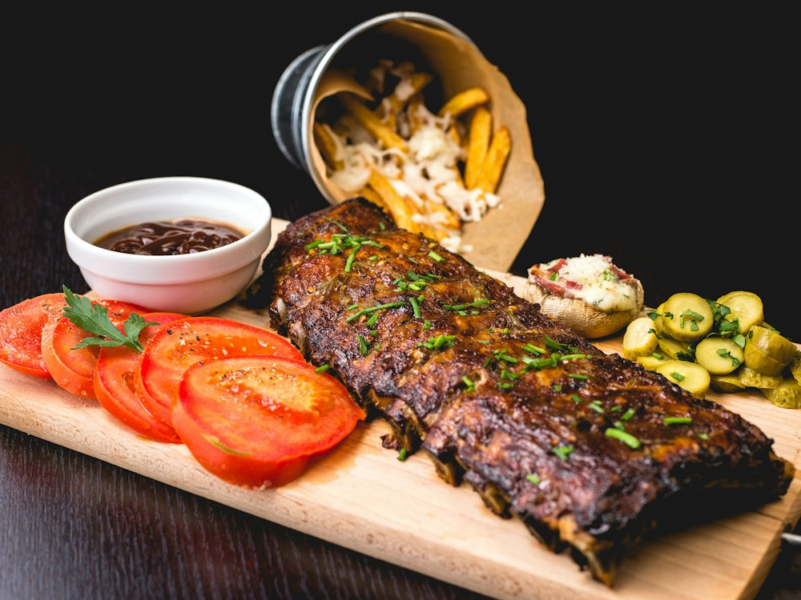

Сарай-Бар
Бар · Европейская · Алматы
Рейтинг
★ 4.7
370 оценок
Год открытия
нет данных
в открытых источниках не нашли
Средний чек
15 000 ₸
по данным 2ГИС
Адрес и часы
📍 Shymbulak, ул. Керей-Жанибек хандар, 640, Алматы · Медеуский район
🕒 08:00-24:00
О заведении
Бар на Шымбулаке.
Меню
Рядом в справочнике
Салам Баку · Салтанат · Самба-гриль-Бар · Симфония · Смайл · Спот